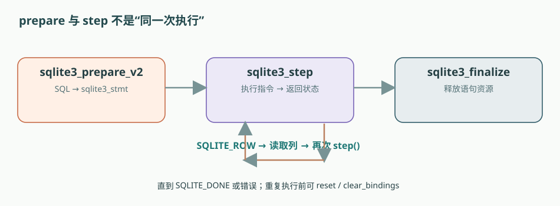

SQLite 内核的两条主线：SQL 编译与存储访问
把一条 SQL 的生命周期拆成编译、执行、持久化三个观察窗口，从接口、函数与文件之间建立可追踪的因果关系。
1. 为什么 SQLite 不是从 parser 直接进入 B-Tree？
编译器处理的是“这段 SQL 应该做什么”；存储引擎负责“如何通过页读取或修改数据”。中间的桥梁是 VDBE（Virtual Database Engine）字节码。编译器不会每读到一个 token 就直接写一次数据库文件。它先构造可以反复执行的程序，再由虚拟机调度具体动作。

每一层面对的“对象”不同：分词器产生 token；解析器和代码生成器维护 SQL 的语义结构；VDBE 操作寄存器与游标；B-Tree 管理表或索引树；Pager 管理页、事务日志及锁相关抽象；VFS 把文件操作映射到操作系统。官方 架构文档逐一解释了这些职责。
2. 编译期：从 SELECT 走到 VDBE 程序
2.1 分词器和解析器
tokenize.c 将 SQL 拆为标识符、关键字、运算符等 token，然后驱动 Lemon 生成的解析器。SQLite 的解析器输入位于 parse.y。注意，这里的解析器通常由 tokenizer 调用，不宜直接套用“一定由 parser 主动拉 token”的教材图景。
2.2 语义分析与查询规划
语法上合法并不代表语义上可执行。例如表不存在、引用的列歧义、表达式使用位置不合法等都需要在编译期分析。查询规划器需要在可行访问路径中作选择，再把选择落实为指令。select.c、where.c、wherecode.c、expr.c 是常见的追踪入口。
2.3 生成的程序
sqlite3_prepare_v2() 输出的是不透明的 sqlite3_stmt*。对于使用 C API 的应用程序，这是一个可绑定参数、逐步执行、最后销毁的预编译语句句柄。开发者不应依赖它的内部字段布局；源码层的 VDBE 结构是实现细节。
// 核心调用顺序的 C 伪代码：省略了每一步的错误处理
sqlite3_stmt *stmt = NULL;
sqlite3_prepare_v2(db, "SELECT name FROM t WHERE id=?", -1, &stmt, NULL);
sqlite3_bind_int(stmt, 1, 7);
while (sqlite3_step(stmt) == SQLITE_ROW) {
/* 读取 sqlite3_column_text(stmt, 0) */
}
sqlite3_finalize(stmt);真正可投入使用的 C 程序必须检查每个 API 返回码，并正确区分 SQLITE_ROW、SQLITE_DONE 和错误码；上方代码只强调控制流程，不能直接作为生产级模板。
3. 执行期：step 返回“行”，不是返回一个集合
调用 sqlite3_step() 时，VDBE 循着程序计数器执行指令，必要时读取表和索引，直到返回一行 SQLITE_ROW、执行结束 SQLITE_DONE，或遇到错误。对于多行 SELECT，你需要多次调用 step；可通过 sqlite3_column_* 在返回行时读取列值。

sqlite3_step() 在同一个 SELECT 中通常是推进到下一行；sqlite3_reset() 则把语句重置以便重新执行。它们具有不同的语义。4. 存储期：记录、页、文件，三个坐标系
数据库的逻辑对象是表与索引；B-Tree 把它们组织到磁盘页中。B-Tree 不应当直接调用操作系统的 read()：它向 Pager 请求页面。Pager 及 PCache 可能在内存中命中页面，未命中时才经 VFS 发出底层读取。VFS 可以被替换，这也是 SQLite 支持多种运行环境的原因之一。
| 操作对象 | 主要模块 | 代码阅读问题 |
|---|---|---|
| 表 / 索引 B-Tree 游标 | btree.c | 游标定位到哪个键？ |
| 页面生命周期、日志、锁 | pager.c、wal.c | 页面何时可读、可修改、可提交？ |
| 页面驻留与回收 | pcache.c、pcache1.c | 页是否已在缓存里？ |
| 底层文件系统调用 | os_unix.c、os_win.c | 本平台的文件接口如何提供？ |
要格外注意：Pager 与 PCache 不是同义词。Pager 的职责还包含事务、锁及回滚/WAL 协作；PCache 更侧重缓存页面的内存管理。文档中将它们归入页面缓存子系统，不意味着可以完全合并成一个“LRU”结构。
5. 用 EXPLAIN 从外部反推内部路径
先对一个可预测的例子观察，再在相同 SQLite 版本的源码里定位相应操作。以下示例刻意区分主键查找与无索引条件：
sqlite3 :memory: <<'SQL'
CREATE TABLE logs(id INTEGER PRIMARY KEY, category TEXT, message TEXT);
INSERT INTO logs VALUES (1,'ok','alpha'),(2,'bad','beta');
EXPLAIN QUERY PLAN SELECT * FROM logs WHERE id=1;
EXPLAIN QUERY PLAN SELECT * FROM logs WHERE category='bad';
CREATE INDEX logs_category ON logs(category);
EXPLAIN QUERY PLAN SELECT * FROM logs WHERE category='bad';
EXPLAIN SELECT * FROM logs WHERE category='bad';
SQL通常，主键条件可借助整数主键定位；在 category 上创建索引后，优化器获得另一条访问路径。然而具体扫描还是搜索、自动索引以及 opcode 序列受统计信息和版本影响，不能把上述经验当作永恒输出。SQLite 官方特别提醒 字节码是内部实现，不同版本可能改变指令集。
源码追踪练习：记录哪些信息才算完成？
- 写出本机
sqlite_version()； - 保存三次 QUERY PLAN 输出和最后一次 EXPLAIN；
- 找到一个与查询指令相关的 VDBE 操作，解释它如何使用 B-Tree 游标；
- 说明你的测试是否实际触发磁盘访问（内存库一般并不证明真实文件 I/O）。
来源与延伸阅读
根据以下原始资料复核主路径与接口；图形为解释用简化模型，具体结构体字段、字节码和版本行为必须以所读源码检出为准。
- Architecture of SQLite · SQLite 官方原始资料
- How SQLite Works · SQLite 官方原始资料
- SQLite Bytecode Engine · SQLite 官方原始资料
- Virtual Database Engine · SQLite 官方原始资料